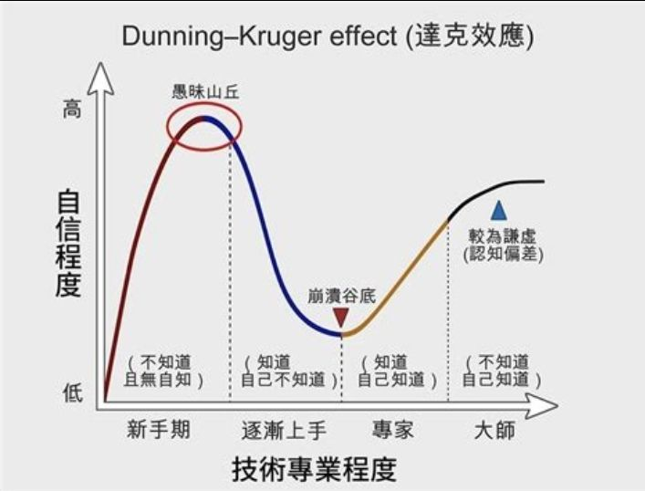

AI 内容越多，学习反而越难
原文小标题：为什么这么多 AI 内容，会让学习变得更难
作者第一次学 Claude Code 时，社区讨论已经从 prompts、tools 一路走到 agents、systems 和 agentic workflows。基础还没补齐，每一次更新都在加重焦虑。
她打开 YouTube，本来只想学 Claude Code。看完三支视频，她已经偏离了原本的方向：屏幕上塞满教程、工作流拆解、工具对比、Threads 截图，还有一群人在说 agents 是下一个大趋势。
变化快的领域会持续丢出新资讯，也会持续丢出新的分心点。
于是学习者被迫同时回答四个问题：哪支视频最重要？哪位创作者真的懂？哪个教程在讲基础？哪个内容只是在追热潮？全文就是她对这几个问题的回答。
选错学习资源，代价比想象中高
原文小标题：为什么错的学习决策，代价很高
作者先摆出供给侧的数字：YouTube 每分钟上传 500 小时新视频，Udemy 上有超过 25 万门课，创作者经济规模已达数千亿美元。内容和产品永远比你的时间多。
一个弱的筛选器，会快速吃掉你的时间，上到不适合自己的课。
弱筛选器的代价不只是浪费几个小时：它会把你带去错的老师、花冤枉钱、上不适合的课、选错工具层次；接着你会用错的顺序学上几天甚至几周，之后还得花更多时间“忘掉”学错的东西和习惯。
她用三条学习科学结论支撑这一点：
- 工作记忆有上限：一次塞进太多新东西，会直接超载。
- 提取比重读有效：主动建立联系、用自己的话解释概念、事后再回想，比反复重读记得更牢。
- 自我调节学习：看清自己已经懂什么、还缺什么，然后替自己决定下一步。
她还点出供给端的问题：课程平台不断降低发布门槛，教人怎么做课、卖课，却很少要求讲师证明自己真有能力教。所以她依靠一套流程来学习。
自学还是买课：先问自己缺地图还是缺捷径
原文小标题：所以我该花钱上课？还是看免费资源呢？
作者把“自学”和“买课”看成两个阶段的工具，而不是二选一的立场。
- 自学适合“建地图”阶段：你还在摸清这个领域的基本轮廓、主要术语、核心问题和重要人物。这时最重要的是建立方向感，还没到挑课的时候。
- 买课适合“抄近路”阶段：你已经知道自己要去哪里，也知道卡在哪里。这时花钱买的是别人整理好的顺序、路径、重点，以及少走弯路的机会。
要问自己的问题是：你现在缺的是地图，还是一条更短的路？
她用投资来类比学习：前期决策会影响后期回报。好的资源筛选器就像选标的，帮你省时间、避开兔子洞，让努力开始累积、复利。
先立骨架，再搬家具，最后才装饰
原文小标题：为什么要先学基础，再学细节
她的学习分两段。先探索：四处看、跟着好奇心走，记下反复遇到的问题，留意一再出现的技能和术语。再投入：刻意把探索和投入分开——先摊开整张地图，找出主要工具、高频术语、一直被提到的人名，以及能用白话讲清整个领域的入门资源；然后收窄，只挑那些能把基础理解到“足以往下走”的材料。
这里她用到两个学习科学概念：scaffolding（脚手架），指符合当前程度的支撑；schema building（图式建构），指先建出心理框架，让领域里的各个部分能彼此对得上。
- 先抓结构：逻辑、规则、底层原理。
- 再抓主要概念和思考方向。
- 最后才处理细节、变化和边界情况。
你先立好骨架，再搬进大件家具，最后才处理装饰。
领域会一直变，但学习一个新问题的过程始终一样。
五步过滤杂讯：先分类，再学习
原文小标题：怎么过滤杂讯，找出真正重要的东西
她的流程是五步，外加理解基础之后的一步进阶：
- 先判断这件事到底是趋势，还是杂讯。
- 搜索宽泛的关键词和初学者路线图。
- 用 YouTube、搜索引擎和 ChatGPT 找出主要创作者、术语和子主题。
- 缩小到对初学者友好的材料，以及能把基础讲清楚的长篇内容。
- 最后确认：这项技能背后到底有真实需求，还是只有 hype。
- 理解基础之后换一套搜索方式，开始看应用型视频——例如用 Claude 帮忙挖名单、和 Obsidian 串联、搭 Second Brain 工作流。这个阶段要的是情境、应用和判断。
入门阶段对她有效的标题长这样：“Claude Code Beginner Guide”“Claude Code Full Tutorial”“4-Hour Claude Code Masterclass”“How Claude Code Actually Works”。共同点是完整、讲基础、讲原理。
正式投入前她会先快扫：用 2 倍或 2.5 倍速看、跳着拖时间轴，或者干脆把视频当音频听；也会用 NotebookLM、Gemini 扫一遍，把视频里的专业关键词抽出来并做总结，加快筛选。
网路几乎免费提供了一切。真正困难的地方，在于判断什么值得深学。
谁值得信任：七层可信度筛选器
原文小标题：我怎么判断哪些资讯来源真的可信
她信任两类人：已经走到她想去的地方、并且多次带别人走到那里的人；以及能把困难的事讲清楚的人。她的可信度筛选器有七层：
- 他们走到过我想去的地方。
- 他们带其他人到过那里。
- 他们做过足够多次，看得出这件事可重复。
- 他们能把这份工作讲清楚。
- 他们能解释自己的思考方式，而不只陈述做过什么。
- 他们的作品在不同形式里都站得住：视频、电子报、免费资源和付费产品。
- 他们的教学能帮助我自己做出更好的判断。
一个曾经带别人去到你想去之处的人，通常有基本的值得信任的地方。作者认为第 2 条是最有力的原则

她借达克效应（Dunning-Kruger effect）提醒：理解很浅的人常常表现出很强的确定感，因为他们还看不见自己漏掉了多少。所以她不把自信当主要信号，更看重证据、清晰度和可重复的结果。
反过来，专家会按领域更深层的结构来组织知识，所以能简化得更好、排序得更好，也更清楚什么该先学。初学者在材料“看起来眼熟”时尤其容易高估自己的理解——这也是浅层老师更有迷惑性的原因：他们能先给你清晰感，却不一定给得了真正有用的判断。
除了看老师本人，她还会看诚实学习者的评价，订阅老师的全部免费资源和社群、潜水观察他们平时在说什么，并把“我自己、其他学习者、老师”三方视角分开来看。
工具会变，判断力留下
原文小标题：当一切一直在变时，什么依然有用
信息流会一直往前走：新工具持续出现，新工作流持续换名字，新创作者持续告诉你世界又变了。
作者认为真正让人松一口气的是：你只需要建立三套方法——一套分类方法、一套信任方法，以及一套判断什么值得投入时间的方法。
真正能长期留下来的能力，是你判断该学什么、该忽略什么、下一步该做什么的能力。
评论区摘录
感谢这么有系统又能落地的方法分享。好奇问一下：在海量浏览 YouTube 或网络信息时，大概会花多少时间？（作者在原文评论区有回复）
最近自己也在不停摸索 AI，打开 YouTube 之后，常会因为好奇心不小心走到很远的地方。有了这样的架构，或许能更有效率地学习。